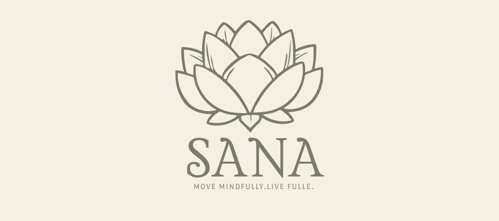
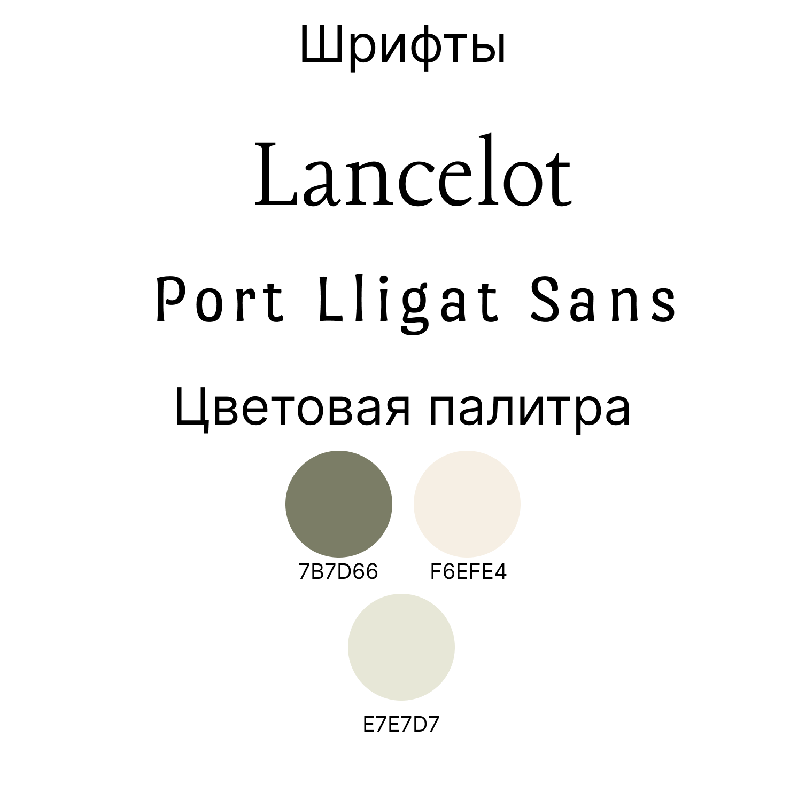
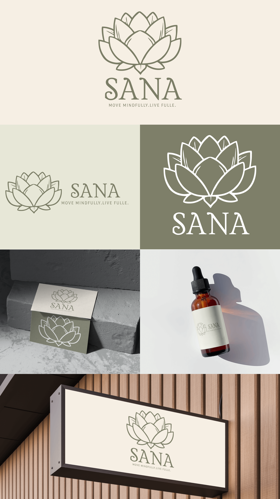

SANA
Логотип и фирменный стиль велнес-бренда SANA.

- Клиент
- SANA — велнес-бренд
- Задача
- Разработать айдентику велнес-бренда SANA: логотип, знак-лотос, фирменную палитру и шрифтовую пару, а также показать применение на носителях — визитках, флаконе с пипеткой и световой вывеске, в позитивном и инверсном исполнении.
- Роль
- Графический дизайнер: логотип, линейный знак-лотос, фирменная палитра, шрифтовая пара, сборка мокапов применения.
Лотос — самый очевидный символ для велнес-бренда, поэтому знак строился так, чтобы не выглядеть стоковой иконкой: цветок нарисован одной волосяной линией, лепестки не симметричны и уложены в три яруса с внутренними прожилками, а нижний ряд раскрыт почти горизонтально — форма получается широкой и устойчивой, а не остроконечной. За счёт открытого контура знак не превращается в пятно даже на мелких носителях вроде этикетки флакона.
Палитра из приглушённого зелёного 7B7D66 и двух светлых тонов (F6EFE4, E7E7D7) намеренно держится в узком диапазоне — это позволяет строить всю систему на инверсии: зелёная линия на кремовом, белая на зелёном, тон-в-тон на визитке. Логотип набран засечным Lancelot с широким разрядкой, слоган — Port Lligat Sans мелким кеглем; засечный шрифт отвечает за спокойную, «травяную» интонацию, а гротеск в слогане не даёт композиции стать декоративной.


Айдентика работает в позитиве и инверсе на всех проверенных носителях — от визитки и этикетки флакона до световой вывески: знак сохраняет читаемость и в одну линию на светлом фоне, и белым контуром на зелёном.